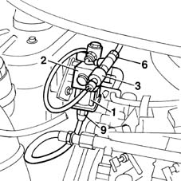
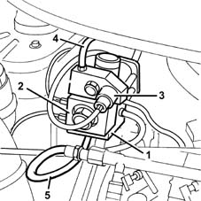
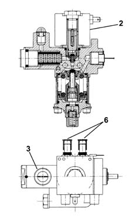
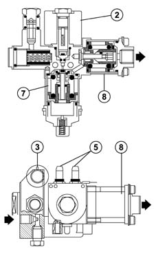
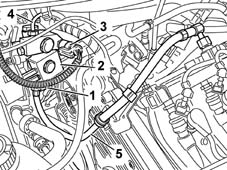

1044E GAS PRESSURE CONTROL DEVICE
- Path
- Descriptions > 10 ENGINE UNIT > 1044 FUEL CIRCUIT PUMP/S AND DEVICES > 1044E GAS PRESSURE CONTROL DEVICE
- Kind
- system description
- Applies to
- engines: 1.6 16v; all production periods
- Interactive page
- https://sloeber94.github.io/elrnDB-fMltpl/en/#/2888248
Applies to: engines: 1.6 16v; production: fino a 05/04; only with equipment: Euro 3 and BIPOWER and BLUPOWER
METHANE PRESSURE REDUCTION UNIT
The pressure reduction unit is fitted in the engine compartment. It includes the actual pressure reduction unit (1) and a cut out solenoid vlve (2); the methane pressure sensor (3) is also fitted on it.
The high pressure pipe (6) directs the methane from the canister to the pressure reduction unit inlet, whilst the low pressure pipe (9) is connected at the unit outlet.

CONSTRUCTION FEATURES
The pressure reduction unit is fitted in the engine compartment. This includes the actual single-stage pressure reduction unit (1) and a cut-off valve (2); it is also fitted with a methane pressure sensor (3).
The high pressure pipe (4) directs the methane from the canister to the pressure reduction unit inlet, whilst the low pressure pipe (5) is connected at the unit outlet.

PRESSURE REDUCTION UNIT
The pressure reduction unit has the task of reducing the pressure of the methane from the vaule in the canister to the supply value for the methane injectors (9 ± 1 bar), in all engine operating conditions.
When the pressure in the canister goes below around 11 bar, the engine management control unit automatically switches from running on methane to petrol because a pressure of below 11 bar at the reduction unit intale would automatically lead to a pressure below 9 bar at the outlet which would not be sufficient for the smooth running of the engine.
Since the temperature of the methane decreases substantially as a result of its expansion due to the rise in pressure, the engine cooling circuit has a shunt (6) which allows the engine coolant to heat the pressure reduction unit to prevent any problems due to the increase in temperature.

PRESSURE REDUCTION UNIT
The pressure reduction unit has the task of reducing the pressure of the methane from the vaule in the canister to the supply value for the methane injectors (9 ± 1 bar), in all engine operating conditions.
The pressure reduction takes place in two stages:
- the first stage (7) reduces the pressure from the value in the canister to around 13 bar
- the second stage (8) reduces the pressure from 13 to 9 bar.
PRESSURE REDUCTION UNIT
When the pressure in the canister goes below around 11 bar, the engine management control unit automatically switches from running on methane to petrol because a pressure of below 11 bar at the reduction unit intale would automatically lead to a pressure below 9 bar at the outlet which would not be sufficient for the smooth running of the engine.
PRESSURE REDUCTION UNIT
Since the temperature of the methane decreases substantially as a result of its expansion due to the rise in pressure, the engine cooling circuit has a shunt (5) which allows the engine coolant to heat the pressure reduction unit to prevent any problems due to the increase in temperature.

Applies to: engines: 1.6 16v; production: da 06/04; only with equipment: BIPOWER
METHANE PRESSURE REDUCTION UNIT
CONSTRUCTION SPECIFICATIONS
The pressure reduction unit is fitted in the engine compartment. It includes the actual single stage pressure reduction unit (1) and a cut out solenoid valve (2); a methane pressure sensor (3) is also fitted on it.
The high pressure pipe (4) conveys the methane from the canister to the pressure reduction unit inlet, whilst the low pressure pipe (5) is connected at the unit outlet.

PRESSURE REDUCTION UNIT
The pressure reduction unit has the task of reducing the pressure of the methane from the value in the canister to the supply valve for the methane injectors (10 ± 1 bar), in all engine operating conditions.
When the pressure in the canister decreases below 14 bar, the engine management control unit automatically switches from methane to petrol operation because at a pressure of below 14 bar at the reduction unit inlet this would automatically result in a pressure of below 10 bar at the oulet and this pressure would be too low for the engine to run smoothly.
Since the temperature of the methane decreases considerably as a result of its expansion due to the sudden increase in pressure, the engine cooling circuit has a branch (6) that allows the engine coolant to heat the pressure reduction unit in order to prevent any problems due to the rise in temperature.
If, following a pressure reduction unit malfunction (e.g.: internal spring incorrectly set) the pressure in the low pressure line reaches the threshold of 18 bar, a valve in the reduction unit allows the excess gas pressure to be discharged into the atmosphere.